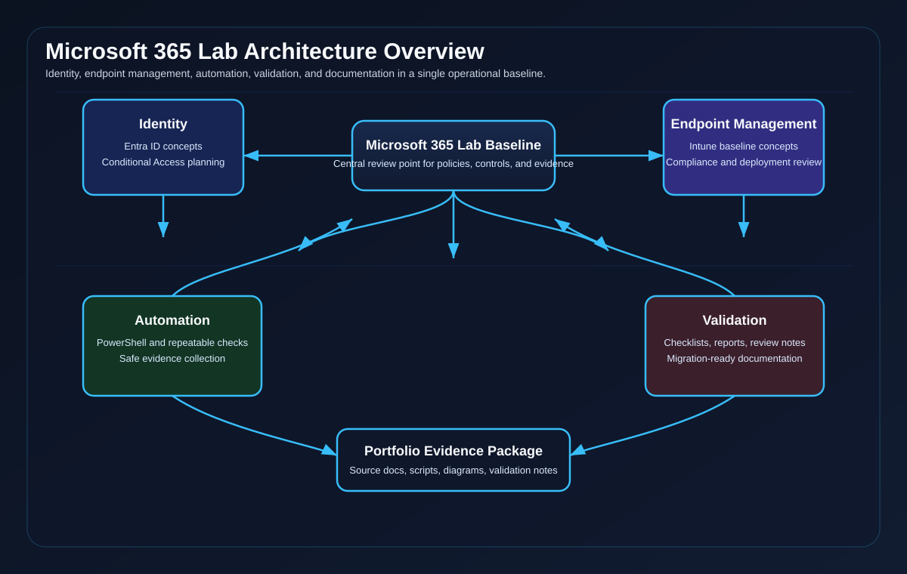
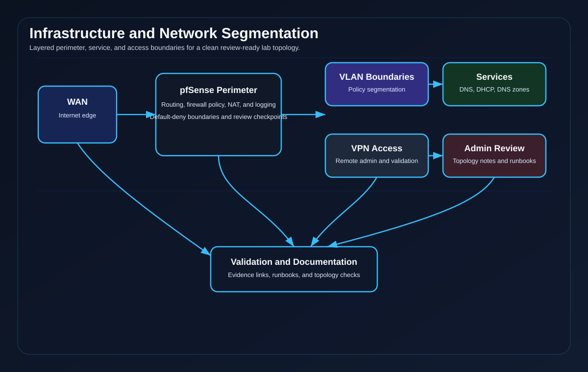
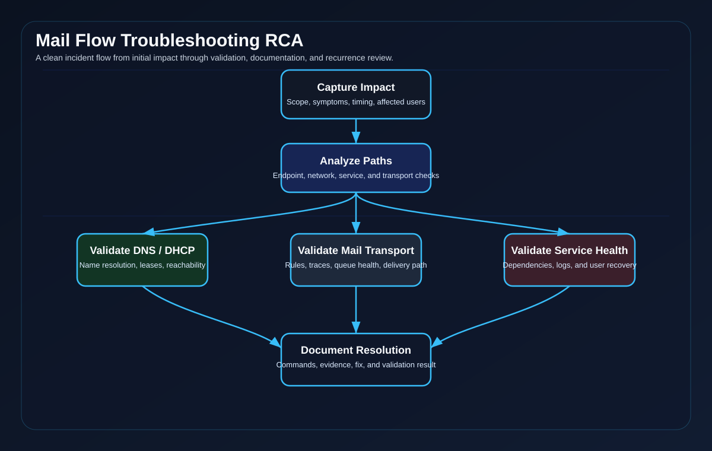

Microsoft 365 Lab Baseline
Identity, endpoint policy, Conditional Access intent, automation context, and validation planning.
Open Case StudySelected Work
Microsoft 365, PowerShell automation, service desk RCA, and network segmentation presented as reviewer-ready workstreams with direct source files.
ObjectiveThe operational problem, requirement, or support workflow being addressed.
ImplementationThe configuration logic, sequencing, validation method, and handoff record.
ProofRepository files that preserve the sanitized technical evidence.
Project Library
Cards are intentionally concise so the source evidence remains the main proof surface.
What this page demonstrates
This page surfaces prioritized operational projects with preserved artifacts, validation chains, and reviewer-focused summaries so engineers and hiring managers can quickly assess approach, tooling, and validation rigor.
Case Study Paths
These pages expand existing project summaries into case-study format and point back to this project library and the proof hub.
Identity, endpoint policy, Conditional Access intent, automation context, and validation planning.
Open Case StudyVLAN boundaries, firewall policy intent, DNS/DHCP placement, VPN access review, and validation methodology.
Open Case StudyVirtualization context, lab topology, infrastructure boundaries, and preserved portfolio evidence.
Open Case StudyOU planning, GPO scope review, migration awareness, rollback preparation, and validation criteria.
Open Case StudyProvisioning logic, dry-run review, logging, rollback context, and operational handoff notes.
Open Case StudyFeatured Work
Three spotlight projects chosen for technical depth, topology evidence, and validation chains.

Records Conditional Access intent, identity boundaries, endpoint management review points, and tenant-safe administration notes using sanitized configuration and diagram artifacts.

Combines topology evidence, VLAN review steps, firewall boundary logic, DNS/DHCP operations, and validation checkpoints for infrastructure review.

Sanitized records capture scope, user impact, queue review, transport rule analysis, remediation sequencing, validation, and post-incident review.
Pairs a PowerShell provisioning script with parameter review, dry-run behavior, logging expectations, change records, and operational handoff notes.
Documents monitoring scope, alert categories, log review practice, escalation triggers, and follow-up logic in a sanitized operations format.
Outlines backup scope, non-destructive restore testing, rollback checkpoints, integrity checks, and documentation expectations for a lab-safe recovery workflow.
{kind=link}
{kind=link}